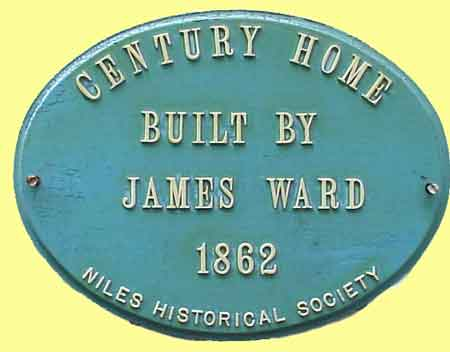
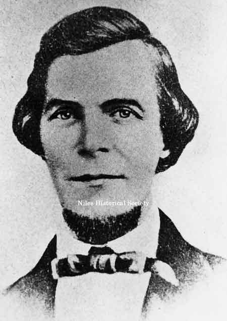

Ward-Thomas Museum


Ward-Thomas Owners
Ward — Thomas
Museum
Home of the Niles Historical Society
503 Brown Street Niles, Ohio 44446
Click here to become a Niles Historical Society Member or to renew your membership
Click on any photograph to view a larger image, click on image again to zoom into photograph.
| Ward–Thomas Homestead
Has Noteworthy Past.  The home, located at 503 Brown Street, was home to three prominent Niles industrialists–James Ward, John Thomas and Jacob Waddell. While the home is not one of the largest homes in the city, its history is what makes it stand out among other homes in the city. Niles Historical Society Century Home plaque of the Ward–Thomas home built in 1862 by James Ward . |
||
|  James Ward, Sr. was born November 25, 1813 near Dudley, Staffordshire England, the son of William and Sarah Ward, and came to America in 1817. Ward lived in Pittsburgh, Pennsylvania with his parents until 1841 when the family moved to Niles and Ward became the top executive of the James Ward & Company. James Ward senior, builder of the historic Ward–Thomas house, premier industrialist in Niles during the Civil War, most foully murdered by an irate tenant. PO1.1487 It’s believed the Ward family came to Niles because of the availability of pig iron and because transporting the materials was cheap and convenient via the canal. |
Thomas Steel Plant was located on the east bank of the Mosquito Creek, south of the Erie RR, it was originally the William Ward and Company, built in 1870. After the failure of the Ward Company, John R. Thomas bought it in 1879 and enlarged it. It was acquired and enlarged again by the Carnegie Steel Company in 1900 and dismantled in 1925. Ward’s first plant in Niles was a rolling mill, which was located on the north bank of the Mahoning River and a mill which rolled out the first iron in the Mahoning Valley. The plant consisted of one stand of ‘muck bar rolls’ and three puddling furnaces, producing such products as bar iron, sheet iron, horse shoe iron and tire iron. In 1859, Ward built the ‘Elizabeth Furnace’, named after his wife, the former Elizabeth Dithering, whom he married in 1835. The company was built to supply pig iron for his rolling mill. Because of the demands for iron products during
the Civil War period, Ward’s company continued to prosper,
bringing the family considerable wealth.
|
On the southeast corner was the old Ward Residence built in the early 1840s. After the Wards moved to their more elaborate home on Brown Street in 1862, known today as The Ward-Thomas Museum today, this house was used as a hotel for many years until it was torn down in 1918 for the Dollar Bank Building. Today (2024)it is the location of Farmer's National Bank. Arrow points to Ward residence at the corner of Park Avenue and Main Street. PO1.915 |
|
An early photo of the Ward–Thomas House
Museum. The offices of the Niles Historical Society are located
in the house. It was built in 1862 by James Ward, the premier
industrialist of Niles and was later home to the Thomas family
who ran the Niles Firebrick Co. A fine example of Italianate Gothic,
the house stands among beautiful formal gardens. PO1.1390 |
Due to the Ward family’s new found wealth, James Ward saw fit to build a new home, one which would be more suitable for a man of his stature. In 1862, Ward borrowed $5,760 from the Western Reserve Bank and built a more suitable home on 115.26 acres of land on Brown Street. The home, designed of Italianate architecture, consisted of five bedrooms, two parlors, a dining room, library, kitchen, solarium and several smaller rooms which were located near the servant quarters. A barn, which housed horses and carriages along with the caretaker quarters were located on the property. The house had seven marble fireplaces, two which were located in the library, and a narrow solid walnut staircase. The moulding located in all the rooms on the first and second floors was carved by hand. An outdoor oven was located on the property near the home. Although the home was a showcase in those days, Ward had only a short time to enjoy it. On July 24, 1864 an argument developed between a disgruntled employee and James Ward Jr. over an eviction notice served on a tenant of one of the company houses. James Ward Sr. overheard the argument and when he arrived on the scene the employee shot him. |
|
| |
||

The famous Falcon Iron & Nail Co. constructed in 1867 by Ward Enterprises and demolished by 1900. PO1.521 John Thomas, who died in 1898, also was founder of the Thomas Furnace Company and the Aetna Iron Company. |
Ward’s son, James Jr., the only one of Ward’s seven children to reach adulthood, assumed control of the Ward empire. Under the leadership of James Ward II, the Ward companies continued to prosper and in 1866, a new mill capable of increasing capacity, was built near the old plant. The following year, Ward organized a subsidiary, The Falcon Iron and Nail Works, and built the plant along the east bank of Mosquito Creek. It was also during 1867 that Ward sent one of his employees to Russia to study how to manufacture Russia iron, a high grade product in demand by stove manufacturers. Ward decided to duplicate the Russian product and soon built the Russia Iron Mill on the north bank of the Mahoning River. Hard time hit Niles during the Panic of 1873
and many companies, including Ward enterprises, were forced into
bankruptcy. Ward made several attempts in the years to follow
to revive the companies but he was unable to do so. |
Built in 1870 by William Ward and known as the Wm. Ward & Co blast Furnace, it failed in the Panic of 1873. It was purchased by John R. Thomas in 1879 who increased capacity from 25 to 320 tons. In 1900 it became part of the Carnegie Steel Co. but was operated only in times of great demand for steel, the last period of steady use being WWI. Closed in 1920, it was dismantled in 1925. This picture shows the original Ward Blast Furnace. PO1.635
|
|
Portrait of Margaret Thomas PO1.1387 |
The First National Bank foreclosed on the Ward mansion in July 1887 and on December 12, 1888 the home was sold to Margaret Thomas for $1,000 during a sheriff’s sale. The mansion was now home to Margaret Thomas and her husband, John, who founded the Niles Firebrick Company in 1872; and their children, John, Thomas, W. Aubrey, Margaretta, and Mary Anne. The Thomas family affectionately nicknamed the home “Brynhyfryd:, a Welsh name for Pleasant Hill. Margaret Thomas spent much time entertaining
guests in the front parlor of the home, serving tea and chatting
with her friends. Mrs. Thomas also loved flowers and she made
certain there were always fresh flowers in the house. In fact,
Mrs. Thomas grew most of the flowers herself in the greenhouse
which was located just a few yards from the main house. |
Portrait of John R. Thomas PO1.1374 |
| |
||
|
William Aubrey Thomas, son of John R. and Margaret Thomas is the only man from Niles to have ever served as a US Congressman. He served from 1903 to 1911. PO1.1378 |
Thomas Edward Thomas, son of John R. Thomas, ran the family businesses for his father. He owned the house directly across the street from the family mansion on Brown St. Thomas worked with his father while W. Aubrey became involved in organizing the Mahoning Valley Steel Company and later became the first president of the Dollar Bank in 1903. PO1.1376 |
Mary Ann Thomas Waddell, youngest daughter of John R. Thomas, local businessman and wife of Jacob Waddell, industrialist and philanthropist. PO1.1377 |
|
Pictured is the Dr. Thomas Clingan house built in 1905 close to the Mahoning River and was later inundated by the waters of the 1913 Flood. The next year, the family moved into their new residence known as the Clingan mansion at 547 South Main Street. P11.315 |
Margaret Thomas continued to live in the home after her husband’s death and she eventually deeded the home to her daughter, Mary Anne, who married Jacob Waddell. Margaretta Thomas married Dr. Thomas Clingan and built a home of their own a short distance from the Thomas Mansion. William Aubrey and Thomas Evan are brothers of Margaret Thomas Clingan. T.E. Thomas was married to Adaline Robbins and lived in the corner house opposite 503 Brown Street. (Mary Ann Thomas Waddell’s house). Pictured are: L-R William Aubrey Thomas, Margaret Thomas Clingan with John Clingan, Margaret Clingan Wick, T.E. Thomas or Dr. Clingan and Elizabeth Clingan Hosack in the photograph. |
|
 |
Mrs. Waddell and her sister, Margaretta Clingan, gave generously of their time and money to many civic causes. Margaretta, was instrumental in developing a city park (Central Park) on East State Street. Mrs. Waddell was the last of the Thomas family to live in the Thomas house. When she died, her heirs donated the house and land to the city of Niles. The mansion became the home of the Niles Historical Society in the 1970's. The Ward-Thomas House is two-thirds of its original size today. A back kitchen was dismantled and one of the seven marble fireplaces was replaced with a wooden fireplace. |
|
Main entrance of the Ward–Thomas Museum. |
Rear view of the Ward–Thomas Museum. |
Hot beds of Greenhouse. |
Back view of greenhouse. |
Garden house attached to greenhouse. |
A view of the barn on the grounds of the Ward–Thomas House before it was painted white. PO1.1818 |
View of the white barn with cupolas. PO2.648 |
Whitehouse ladies gowns on display. |
Child's desk with writing tools. |
View of formal stairway. PO2.298 |
One of several marble fieplaces. PO2.459 |
Barn display of kitchen diorama. |
Collection of shoes from early 1900s. |
Victorian dresser with mirror. |
View of one of the second floor bedrooms. |
Piano located in the library. |
View of formal gardens. PO2.41 |
View of main entranceway and gate. |
During the time the Waddell family lived in the home, Calvin Coolidge, who later became the 30th President of the United States, spent a night in the home when he was vice-president of the United States. Coolidge was in Niles for a ceremony at the McKinley Memorial. Vice President Calvin Coolidge spoke at the dedication of the Harding bust at the McKinley Memorial on June 18, 1921. PO1.771 |
In 1921, a bust of Warren G. Harding was unveiled at the McKinley memorial. Among the distinguished guests on the grandstand were Vice-President and Mrs. Calvin Coolidge. Mrs. Jacob D. Weddell nee Mary Ann Thomas had the honor of pulling the cord for the unveiling. PO1.772 |
June 1921, at the dedication of the Harding bust at the McKinley Memorial. Calvin Coolidge is the gentleman in the center and Mrs. Waddell, (Mary Ann Thomas) is to his left. PO2.328 |
Jacob Waddell, organized and became President of the Mahoning Valley Steel Company. He also served as President of the Niles Bank Company and became the first Director of the Mahoning Valley Sanitary District. In 1931, Jacob and Mary Waddell donated a substantial amount of land to the City of Niles and the land became known as Waddell Park. Mary Waddell lived in the home following her
husband’s death in 1939 and after her death in 1969, the
house and property was deeded to her heirs. In 1979, the house
and property was deeded to the City of Niles and in 1983 the Niles
Historical Society was entrusted by the city to develop the home
into a museum. Photograph taken shortly after completion of the Niles Trust Co. building in 1930. Exterior frontage and large front doors. PO1.33 |
||
The house today is known as the Ward–Thomas Museum and the home was placed on the National Register of Historic places in February 1984. The house never carried the distinction of being the Ward–Thomas–Waddell House because Mary Waddell was the former Mary Anne Thomas. The Ward–Thomas House is two–thirds of its original size today. A back kitchen was dismantled and one of the seven marble fireplaces was replaced with a wooden fireplace. Portraits of John and Mary Thomas hang above
the two fireplaces in the library and the parlor in the home has
been named the ‘Mary Waddell Room’ in her honor. Mr. and Mrs. Jacob Waddell. PO7.60 |
||
|
|
||


{kind=link}
{kind=link}
{kind=link}
{kind=link}
{kind=link}
{kind=link}
{kind=link}
{kind=link}
{kind=link}
{kind=link}
{kind=link}
{kind=link}
{kind=link}
{kind=link}